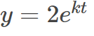
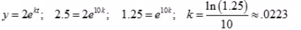
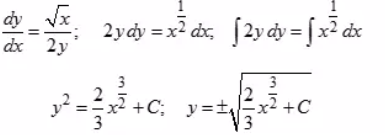

A city had a population of 2 million people in 2000, and a population of 2.5 million in 2010
Find the Exponential growth model
 and use the model to predict the population in 2030.
and use the model to predict the population in 2030.
Ex:
A city had a population of 2 million people in 2000, and a population of 2.5 million in 2010
Find the Exponential growth model
and use the model to predict the population in 2030.
Ans:
We already have  (Millions). We can begin counting at year 2000.(0,2)
Now let’s use the other (t, y) data point (10, 2.5) to solve for k(population)

now we are finding 2030(t = 3) 
Ex:
Solve the differential equation
Ans:

Ex:
The rate of change of R with respect to t is proportional to value R
When t=0, R=300 and when t=1. r=500
write and solve the differential equation that models this situation.
Ans: